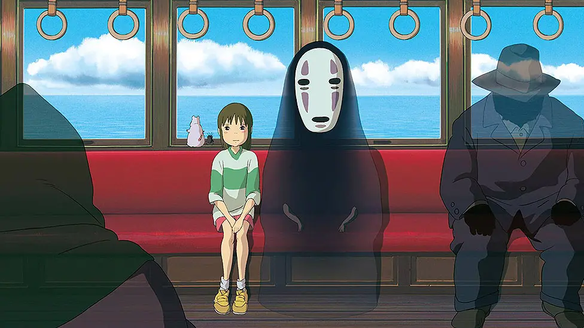

Tenho 25 anos e sou analista de Help Desk há 5 anos como suporte de Nivel 1, conheci o mundo da tecnologia desde os 9 anos, e desde lá que começou minha calvície me encantei com as possibilidades que poderia fazer com um computador, desde edição de vídeos, animações, mod de minecraft e softwares.
Sou curioso e gosto de tudo que envolva criatividade, procuro sempre inovar em algo que faço.
Sou desenvolvedor Full-Stack focado em ReactJS, Angula NodeJS e Java.
Em 2021 comecei a faculdade de Análise e Desenvolvimento de Sistemas e agora que me formei estou em busca da primeira oportunidade.